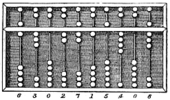

В настоящее время у каждого из нас стоит на столе персональный компьютер, который обрабатывает и выполняет множество разных задач.
Давным - давно, тысячи лет назад, у человека появилась необходимость вести подсчёты. Связано это было с развитием экономики - производства продовольственных и непродовольственных товаров, а также торговых отношений. Известно, что считали тогда на счётах, носивших название "абак". Внешне они отличались, но принцип работы на них, то есть ведение подсчётов был одинаков.
⬅ Китайский абак суаньпань
Развитие компьютеров принято делить на 5 этапов - принято говорить о пяти поколениях:
Прошлые поколения ЭВМ:
Поколение ЭВМ сегоднешнего времени:
Поколение ЭВМ, которое появится в ближайшем будущем: